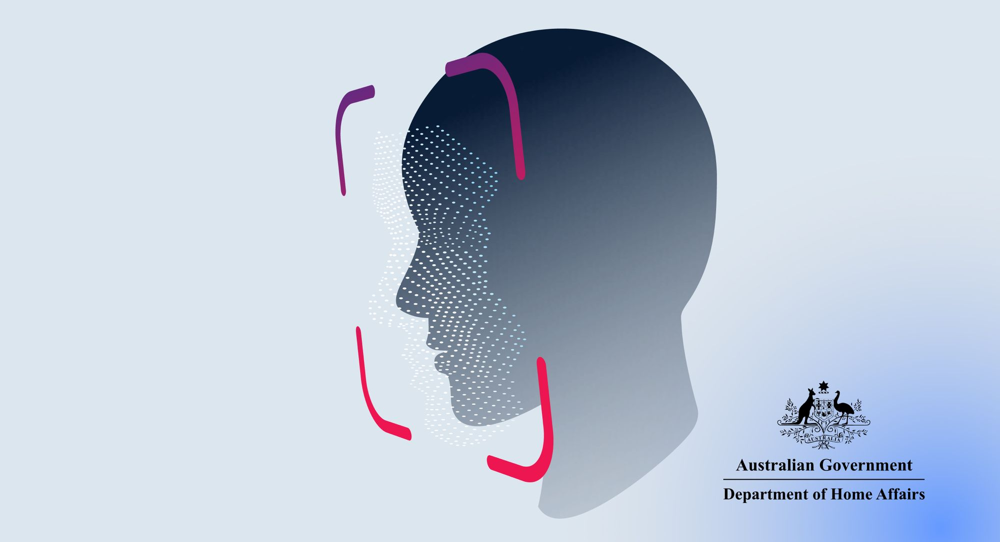
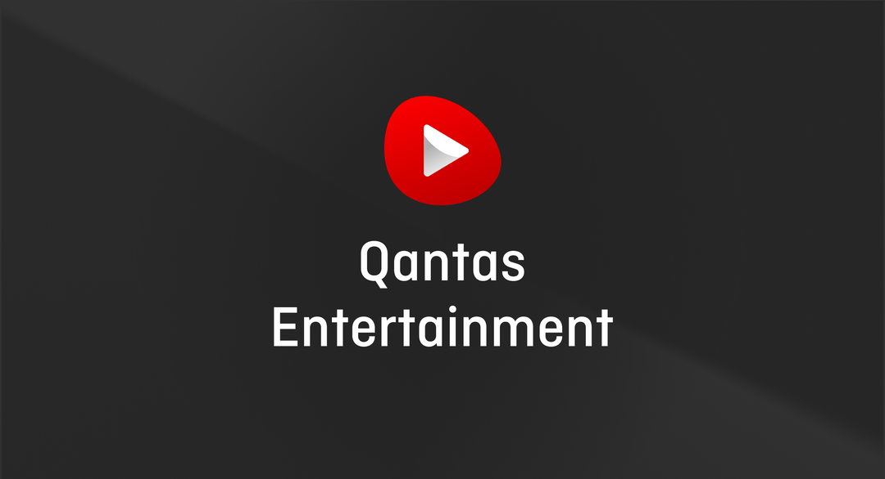

The birth plan that advocates for you during labour

Birth plan templates are full of medical terms first-time parents do not understand. AI tools generate five pages nobody reads during labour. A printed piece of paper gets left at home. BirthGuide is a shareable URL: your birth preferences, your contacts, your hospital bag checklist, on any phone, in one tap.
 Summary
Summary
BirthGuide is a live consumer product I designed and shipped as a solo non-developer founder in under two weeks. From the first conversation on February 9, 2026 (naming the product, registering the ABN, writing the full PRD) to a deployed, payment-taking product on February 18. A guided questionnaire produces four personalised outputs: a shareable interactive birth plan page, a partner labour cheat sheet, a clinical PDF, and a personalised hospital bag checklist. The first paying customer found the product through a ChatGPT referral, completed the questionnaire in under 10 minutes, paid A$4.99, and immediately shared her plan with her birth team. She never downloaded the PDFs. That single data point confirmed the core thesis: the shareable page is the product.
The problem
Templates assume you already know
Birth plan templates are written for people who already understand the terminology. Delayed cord clamping. Active management of third stage. Continuous CTG monitoring. First-time parents encounter these terms with no context and no explanation. The template does not help them decide. It asks them to tick a box next to words they have never seen.
More content is not better content
AI tools like ChatGPT can generate a birth plan, but they produce five pages of prose. A midwife in a labour ward has 30 seconds, not 30 minutes. Length is not thoroughness. It is noise.
Paper fails on the day
A printed birth plan has to be remembered, packed, and produced at the right moment. On the day of the birth, in the rush to get to the hospital, "where is our birth plan?" is a real question. How many copies? Did we pack it? Is it the latest version? A piece of paper in a bag is not a reliable system for the most important day of your life.
What BirthGuide solves
Each of these three problems has a direct solution in the product:
- A guided questionnaire that explains every option in plain language, so parents understand what they are choosing, not just what they are ticking.
- A single interactive page with only the information that matters, scannable in seconds. Top 5 priorities surface first. Everything else is one tap away.
- A shareable URL that lives on your phone, never needs printing, includes a QR code for anyone who wants a physical copy, and has tap-to-call contacts for emergencies and services like placenta collection.
- A personalised hospital bag checklist built from your actual birth preferences. If you are planning a water birth, it includes swimwear. If you chose hypnobirthing, it includes affirmation cards. Generic templates assume every birth is the same.
During active labour, the birthing parent cannot read their own plan. The partner becomes the primary reader. They need something scannable on a phone, not a five-page Word document.
No category leader
"Birth plan template" and "birth plan generator" are high-intent search terms with meaningful Australian volume (estimated 1,000–2,700 monthly searches for "birth plan" alone) and zero Australian-specific interactive tools competing for them. The market has template blogs, generic PDFs, and a handful of US-focused apps. None produce a shareable, interactive output designed for the Australian maternity system: RANZCOG guidelines, MGP care models, public vs. private hospital pathways.
The product design
One questionnaire, four outputs
The core design decision was to separate the input experience from the output formats. Parents answer one guided questionnaire in under 10 minutes. From that single session, the system generates four things simultaneously:
- An interactive birth plan page. A unique URL at birthguide.com.au/plan/[name] with tabs for Summary, Contacts, and Hospital Bag. The Summary surfaces a "Top 5 priorities" list. Contact numbers are tap-to-call. The Hospital Bag tab has interactive checkboxes. Designed to be pulled up on a phone in a labour ward.
- A partner labour cheat sheet (PDF). A single page designed for the birth partner to hold. Large text, colour-coded sections, scannable in under 30 seconds.
- A full birth plan PDF. A colour-coded, single-page A4 document with a 4-column grid layout for clinical use. Multiple birth plan variants (primary, epidural backup, caesarean) fit on one page. Format validated by Australian midwives.
- A personalised hospital bag checklist (PDF). Generated from the parent's specific preferences, not a generic list. If they chose a water birth, it includes swimwear. If they chose hypnobirthing, it includes affirmation cards.
The shareable URL as the core product
Most competitors produce a document. BirthGuide produces a living page. This was a deliberate design bet. A PDF is a dead end: printed once, filed, forgotten. A URL is shareable, updateable, and viewable on any device without a download. It also has a built-in viral loop: every completed birth plan creates a shareable URL that exposes BirthGuide to the parent's birth team, partner, midwife, family.
The interactive page is the product. It owns the unqualified noun "birth plan." The PDFs are supplementary print formats for contexts where a screen is not accessible.
Repositioning: from kit to shareable page
The initial version of BirthGuide was positioned as a "birth plan kit" with four downloadable outputs listed as equals: a birth plan PDF, a partner cheat sheet, a hospital bag checklist, and an interactive shareable page. The landing page treated all four as selling points.
Through the process of writing landing page copy and testing how people described the product, a pattern emerged. The interactive page was the most differentiated output but was being buried as one of four equal items. That was the wrong hierarchy.
The repositioning was informed by how successful digital products name their formats. Paperless Post calls the digital version "the card" and the printed one "the printable." Linktree is "your Linktree," not "your Linktree link page." The pattern is consistent: the interactive version owns the unqualified noun. The static version carries the format qualifier.
"Kit" was removed from every surface. The interactive page became "your birth plan." The PDFs became "print versions." The headline became four words: "A birth plan you share."
Before
Get your Birth Plan Kit: 4 outputs including an online birth plan, full PDF, cheat sheet, and hospital bag checklist.
After
A birth plan you share. Send your preferences to your midwife and partner in one tap. Print versions included for the hospital bag.
Designing for the real moment of use
Most birth plan tools are designed for the planning phase: sitting at a desk, at 32 weeks, with time to think. BirthGuide is designed for the use phase: a labour ward at 2am, a partner fumbling with a phone, a midwife with 30 seconds to scan. That constraint drove every layout and hierarchy decision. Top 5 priorities first. Tap-to-call for every number. No narrative prose in the summary. Colour-coded sections matching the PDF so a midwife who has seen the printed version can orient in the digital one instantly.
The interactive birth plan page in use. Summary tab shows Top 5 priorities first, tap-to-call contacts, and interactive hospital bag checklist.
Instrumentation and iteration
Replacing usability testing with passive observation
With no budget for formal research and low traffic volume in early weeks, the measurement stack had to do the work that usability studies would normally do. Before the first line of content was published, I instrumented the funnel end-to-end.
GA4 tracks a custom event taxonomy across every step: questionnaire started, each section completed, abandonment (fires on tab visibility change), preview viewed, payment initiated, and file downloaded. Each event carries metadata including section name, completion percentage, and active time spent.
Microsoft Clarity records every session: heatmaps, scroll depth, rage clicks, and dead clicks. The GA4 integration means a drop-off identified in the funnel can be traced to the exact Clarity recording of that session.
Finding the blank screen problem
This instrumentation resolved a critical issue early. For weeks after launch, Clarity recordings showed mobile visitors staring at a blank white screen for several seconds before bouncing. The root cause was a rendering architecture decision: the server was not sending visible HTML until JavaScript had loaded and executed. Fixing it took minutes. Finding it required watching session recordings. Without instrumentation, this would have been invisible in aggregate data. The session would just appear as a bounce with no explanation.
The cycle is: measure, watch recordings, identify friction, write a spec, ship the fix, measure again. Every feature is instrumented before it ships. Every decision is informed by what the data shows.
The questionnaire abandonment model
Abandonment events fire when a user switches tabs or the browser loses focus. Because each event carries the section name and completion percentage, I can see exactly where in the questionnaire people stop, not just that they stopped. This is more useful than a completion rate alone. If abandonment clusters at section 3 of 6, the problem is section 3, not the questionnaire in general.
Early traction
First customer
BirthGuide launched in February 2026 and received its first paying customer on May 5, 2026. A first-time mother in Perth, due May 29, found the product through a ChatGPT referral. GA4 attribution shows exactly one session from chatgpt.com/referral that day. She completed the questionnaire in a single sitting, paid A$4.99, and immediately viewed and shared her interactive birth plan page with at least two other people: her partner and/or midwife. She never downloaded the PDFs.
This is the validation signal. The first real customer used the shareable interactive page, not the documents. The product thesis was correct: the URL is the product.
What the funnel data shows
The conversion funnel works end-to-end: from external referral, through a 10-minute questionnaire, to payment, to usage, to sharing in approximately four minutes from first visit to payment. The product has the viral loop built in: every completed plan creates a URL that travels to people who may be expecting or know someone who is.
Unit economics
BirthGuide runs on serverless infrastructure: Vercel, Supabase free tier, Stripe. The marginal cost of serving an additional user is effectively zero at current scale. Fixed monthly infrastructure cost is under A$20. At A$4.99, the business is profitable from the first customer on a per-unit basis.
The price was reduced from A$14.99 to A$4.99 to lower the barrier for early adoption and validate the funnel before optimising for revenue. The more significant model shift is the subscription play: a parent who pays A$4.99 for the birth plan and converts to A$7.99/month for postnatal tools has an LTV of approximately A$100 in the first year. Under that model, the birth plan is the acquisition cost, not the revenue.
How it grows
Why paid acquisition doesn't work at A$4.99
At A$4.99, paid acquisition on cold traffic is not viable. CPA across Google, Facebook, and Reddit typically meets or exceeds the product price. The growth strategy is organic-first, with four compounding channels:
- SEO content. A 12-month calendar of 48 articles targeting high-intent Australian birth planning keywords. Six articles are publication-ready. Each answers a real question and funnels readers to the paid questionnaire.
- AI referrals. ChatGPT already recommends BirthGuide. As AI assistants become the primary research tool for expecting parents, being the product an AI can describe and link to is a compounding distribution advantage.
- Organic sharing. Every completed birth plan creates a shareable URL. The parent shares it with their partner, midwife, and family. Each share is a product demo.
- Clinical credibility. A mapped pathway to endorsement through the Australian College of Midwives (CPD accreditation). ACM National Conference in September 2026 is the first engagement target. Midwife trust drives organic recommendations.
The competitive position
The birth planning space has no category leader. Existing tools fall into three groups: template blogs (static, no personalisation, US-focused), PDF generators (documents with no shareable experience), and pregnancy apps where birth plans are a minor feature buried inside a larger product not designed for the Australian system.
The likely challenge from Flo or Ovia is real. They have distribution and could add a birth plan feature. The answer is Australian clinical specificity (RANZCOG guidelines, MGP care models, public vs. private hospital pathways), the shareable interactive format as a standalone product rather than a buried feature, and formal midwifery endorsement. Each layer is harder to copy than the technology underneath it.
What comes next
The birth plan is the entry point, not the ceiling. The same product pattern (guided questionnaire, personalised output, shareable with a support team) applies to postnatal recovery, newborn feeding, and infant sleep. Each moment in the parenting journey where people search for structured, personalised guidance can be served by the same design system.
The near-term priorities are the SEO content calendar (48 articles targeting Australian birth planning keywords), clinical endorsement through the Australian College of Midwives, and the first postnatal product to test whether the questionnaire-to-personalised-output pattern extends beyond birth planning.
The long-term vision is a lifecycle parenting platform where the birth plan is the acquisition wedge and subscription products carry the revenue. Distribution scales through B2B2C partnerships with private health insurers and hospital networks who offer BirthGuide as a branded service to their maternity members.
How it was built
I am not an engineer. My background is product design and strategy. BirthGuide is built entirely from design specifications I wrote: every feature, every edge case, every instrumentation decision, executed by an AI coding agent (OpenCode) from those specs. Zero external funding. Zero engineering hire. Built alongside a full-time role at GitLab.
The timeline: February 9, named the product and registered the ABN. February 9–16, wrote the full PRD and researched the visual design direction. February 17, OpenCode built Phase 0 and Phase 1 from the spec. February 18, deployed to Vercel, configured DNS, went live with Stripe payments and email delivery via Resend. Ten days from idea to a product accepting real money.
The build was 10 days. The first customer took longer, because of an SSR rendering issue killing mobile traffic that only session recordings could surface, and because organic content takes time to compound. Those are two different clocks.
Every technical decision was a product decision: what to build, what to defer, and how each piece serves the user at the specific moment they need it. The constraint of not being able to write code made every spec more precise, not less.
- Next.js, TypeScript, Tailwind CSS
- Supabase (database and auth), Stripe (payments), Vercel (hosting)
- GA4 with custom event taxonomy, Microsoft Clarity session recording
- Claude API for the on-site conversational assistant
Protecting Data Privacy
All user data referenced in this case study is from BirthGuide's own product analytics. No individual users are identified beyond what they have consented to share as customers of the product.
Up Next

Changing Booking Behaviour Through Worker Status Visibility
Reducing uncertainty in a two-sided marketplace and increasing successful bookings by 12%.

Reducing Friction in Government Visa Applications
Automating data entry to improve completion and reduce user effort in a high-stakes service.

Driving Engagement Through a Unified Entertainment Experience
Reimagining in-flight entertainment as a cohesive product ecosystem.